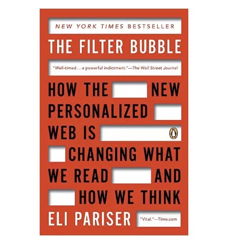
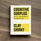

The filtering opportunity for AI

If I was the CEO of your company or startup I would give the customers or users all possible filtering choices that don't disturb them but help them filter out what is not interesting to them because it just allows you to know more about what they want and provide more features to your machine learning system that is programmed to classify users, customers in several groups using principal component analysis (PCA) or such kind of classification algorithm.
If you also want, you can also add to this machine learning system the data about display ads you gathered from websites you think your target audience visits because ads tell already who they think the users or customers are. I have already written an article that highlights how ads tell who you are.
Filtering systems chape the way we internet users consume data and information. There a lot of voices that speak for the concerns that such filtering systems raise. One of these concerns being the uniformization of taste and culture and influence driven by the choices of the early adopters because recommendation system that allows filtering often judge by numbers. The more an article is viewed, the more a social media post is liked, the more a product is bought, the more they all get more exposure leading to an increase of the numbers that the recommendation system uses.
This book goes into this effect of the filtering and recommendation system. I do believe that Artificial intelligence can provide a better User or Customer experience by widening the set of users' or customers' choices not limit it with the goal of reducing the business administration cost.

The Filter Bubble of Eli Pariser is all about the effect of the filtering and recommendation system. How they lead to uniformization of culture. Big startups that manage high traffic platforms tend to technically cut the number of features and options that the users can handle to customize their experiences, using AI to make the customization by collecting data and classifying the users in groups and cohorts using one of the AI algorithms, I talked about in the second paragraph of this article (PCA). The principal component analysis is an important statistical concept that uses EgeinValue and Vectors that are also important mathematical concepts. Yes, Statistics and mathematics are two connected while we are being connected by platforms like Linkedin, Twitter, or Facebook, scientific fields also connect with each other through collaboration and communication. Connections are fueling the growth engine of our society. These connections are now mostly done online but remember that they also happen offline like they used to because of the advent of the internet.
This event below is an example of such an offline platform that created connections that pushed thinks and things forward for the benefit of everybody.
Connections lead to a better discovery of talent and filtering helps make more granular connections.
HR and team management processes and platforms don't leverage the lessons we got from this event and the theory of connected people that’s why I said that Today’s talent discovery systems are outdated
Like the Book of Eli Pariser, reading Clay Shirky can also give you a more deep level of understanding of all of these practical theories.

if you Need to onboard yourself into Book Dojo here it is.
Soon the first data-driven book here